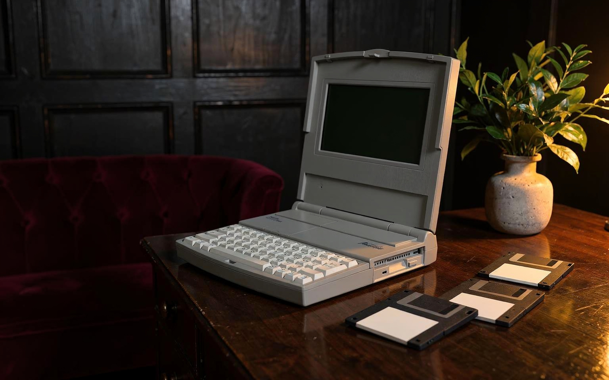

Brother Super PowerNote PN-8500MDS
Bilgisayar & Yazı
← Koleksiyona dönYazının, ekranın ve klavyenin aynı masaüstü ritminde buluştuğu bir tasarım.
Brother Super PowerNote PN-8500MDS, açılır ekranı ve Türkçe karakterli klavyesiyle yazıya ayrılmış bir çalışma alanı sunuyor. Brother’ın bu alandaki geçmişi, 1982’de tanıttığı EP-20 elektronik yazıcısından 1984 tarihli Picoword kelime işlemcisine uzanıyor. Koleksiyondaki cihaz bu çizginin sakin ve işlevsel tasarım anlayışını taşıyor: sayfanın henüz uygulamalar arasında kaybolmadığı, klavyenin doğrudan metne yönelttiği bir çalışma deneyimi.